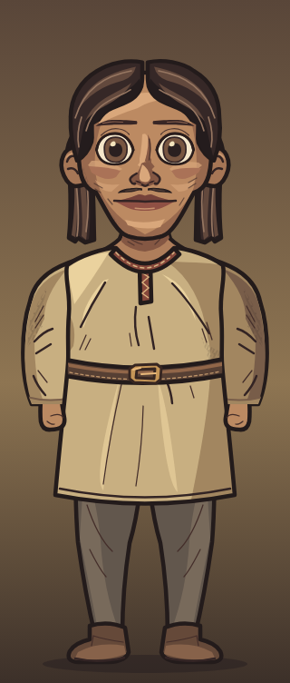
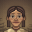
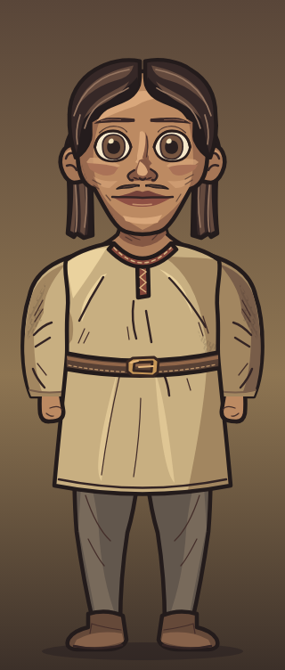
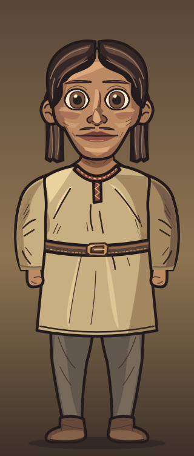

<!doctype html><html lang="ru"><meta charset="utf-8"><meta name="viewport" content="width=device-width,initial-scale=1"><title>Высота кончика носа</title><style>body{font:16px system-ui;background:#25201b;color:#eee2cd;margin:0 auto;max-width:1280px;padding:1rem}
    a{color:#f4ca91}h1,h2{font:700 1.7rem Georgia,serif}nav ul{columns:3}.grid{display:grid;gap:1rem;
    grid-template-columns:repeat(auto-fit,minmax(230px,1fr))}article{min-width:0;border:1px solid #655343;
    background:#312821;padding:.6rem;border-radius:5px}a img{vertical-align:middle}img{max-width:100%;height:auto}
    .character{display:block;max-height:460px;width:auto;margin:auto}.card{width:32px;height:32px}
    .detail{display:block;width:100%;margin:.35rem 0}.compare{display:flex;align-items:flex-start;gap:.5rem}
    .compare a{flex:1;min-width:0}small{color:#dccab0}code{overflow-wrap:anywhere}@media(max-width:730px){nav ul{columns:1}}</style><main><nav><a href="index.html">Все разделы</a></nav><h1>Высота кончика носа</h1><div class="grid"><article id="appearance__nose_tip_height__standard"><h3>Обычный</h3><code>standard</code><a href="images/8d721c4b9f9a192b62f8b5afcfb949995a1dd9e80b55b20f75d2425154a29f52.png"></a><p><a href="images/2032a837c7de7ba51bb1fde1622783a982c0cd337c3aa0bbb02ed541b92836ba.png"></a> <small>32 × 32</small></p></article>
<article id="appearance__nose_tip_height__raised"><h3>Приподнятый</h3><code>raised</code><a href="images/82713e0c34fc84a56e20c8fc77f2704f3a10a73a48bbe05d973f1826004635ef.png"></a><p><a href="images/c7fb1bc796ca8c3ce26ef044c74b21d1ea0a6e337412e119b2fc15c29ac0ac7c.png"></a> <small>32 × 32</small></p></article>
<article id="appearance__nose_tip_height__low"><h3>Опущенный</h3><code>low</code><a href="images/bebedbdd28bd323cdf3058eedaae43c341b59386e97cc41d9641278c257ba442.png"></a><p><a href="images/5f957cfb5b337bef030af9e9632bb60aadf5dd9a3fa377ec212ea7cbe3eec3ae.png"></a> <small>32 × 32</small></p></article></div></main></html>
